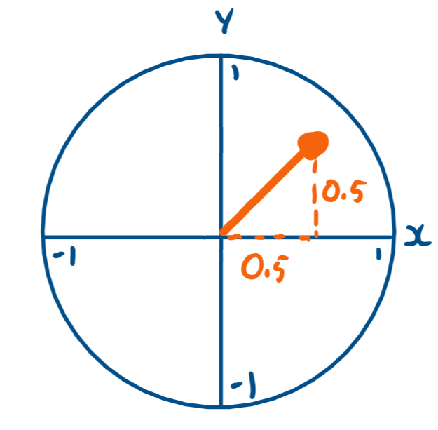
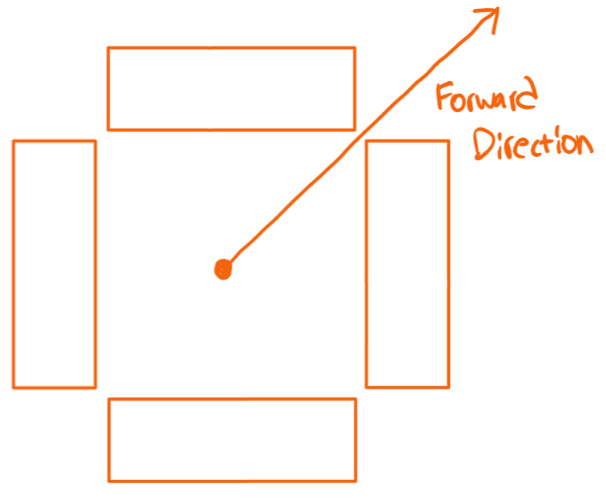
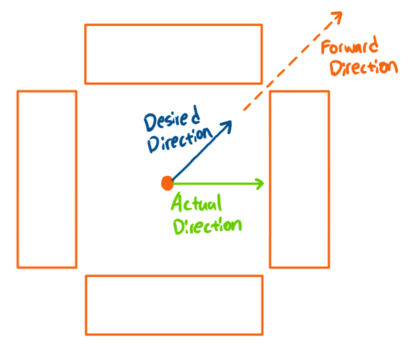
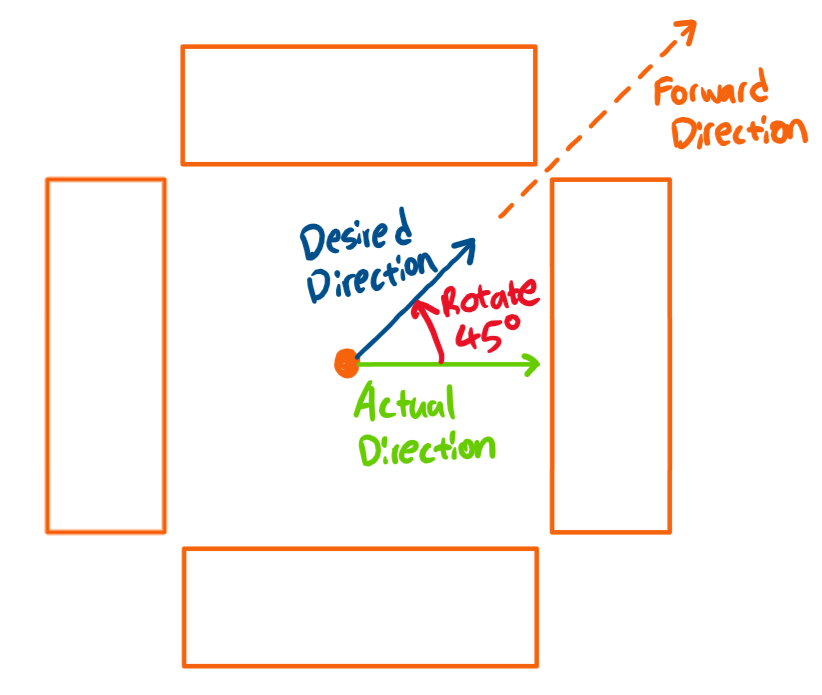

Explanation: Field Oriented Control¶
To understand how HolonomicLib manipulates holonomic drives, you must first understand how field-oriented control works. If you do not understand how field-oriented control works, you should check out this video. In a gist, regardless of the heading, the chassis always moves left, right, forward, and backward when you push the primary joystick left, right, forward, and backward respectively.
Step 1: Joystick Inputs¶
Joystick inputs can be represented as vectors.
{kind=link}
When the joystick is in this position, it returns 0.5 in the Y-axis and 0.5 in the X-axis. You can represent the joystick position as a 2D cartesian vector: \((0.5, 0.5)\).
Step 2: Rotate Joystick Vector¶
Let’s say we have an X-Drive (works the same with mecanum drives) that is currently rotated 45 degrees, and we want the chassis to go in the direction \((0.5, 0.5)\). Yet since the chassis is rotated 45 degrees, it goes the wrong direction.
 {kind=link}
{kind=link}
Thus, to move in the desired direction, you must compensate for the chassis’ heading by rotating the joystick vector 45 degrees counterclockwise.
{kind=link}
You can use the vector rotation theorem to rotate the vector.
\(x_2=\cos(\beta x_1)-\sin(\beta y_1)\)
\(y_2=\sin(\beta x_1)+\cos(\beta y_1)\)
\(\beta\) - angle to rotate by (radians)
\((x_1, y_1)\) - vector to rotate
\((x_2, y_2)\) - rotated vector